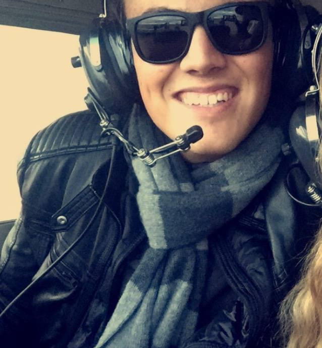
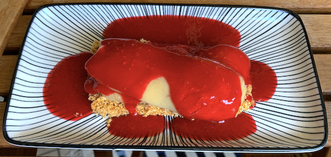
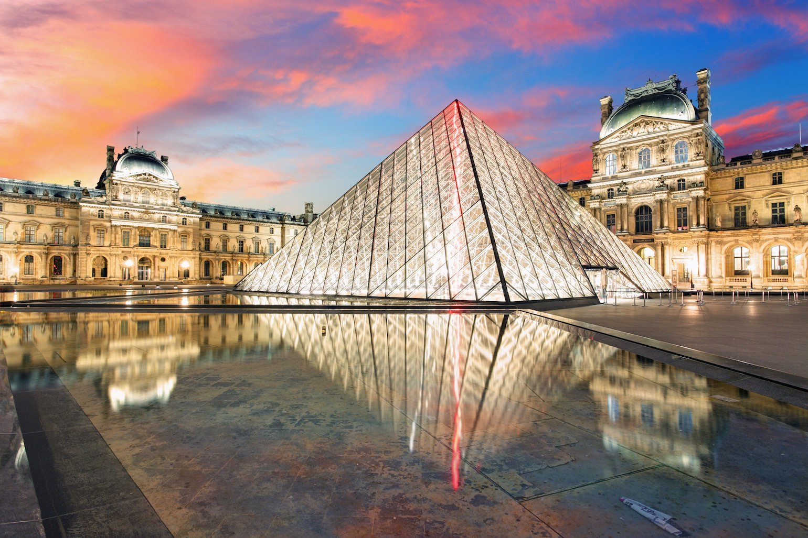

Hello ! Je suis Jérémy 🤩
Actuellement en 4ème année à l'ESSEC Business School, je suis passionné :
- De cuisine 🍽
- D’aviation civile ✈️
- D’architecture 🏛
Bien que la cuisine soit une passion, j’ai décidé de ne pas en faire mon métier. Il en va de même pour l’aviation civile et l’architecture.
Je travaille donc dans le secteur de la santé et du médical en tant que chargé de projet.
Mais j’ai choisi de vous parler de mes passions aujourd’hui !
Venez découvrir ce qui rend mes passions aussi uniques et universelles à la fois !
Pour cela, cliquez sur les liens ci-dessous:
🍽 La cuisine 🍽
Inspirée de la culture méditerranéenne aux cultures indiennes et asiatiques en passant par des cultures orientales, je mélange souvent dans mes casseroles les épices, les saveurs du sud avec une touche vietnamienne. D’un simple canard à l’orange au curry de pois chiche et épinards, je trouve mon inspiration dans les recettes de ma famille et dans les plats goutés lors de mes voyages.
J’aime aussi créé des desserts comme le "M", entremet citron, basilic, pomme infusées dans un thé vert, ou le "Confiné", pâtisserie à la violette, à la pêche rôtie au miel et à la framboise.

✈️ L’aviation civile ✈️
Etant presque né dans un avion, la technicité, intérêt commun à l’architecture d’ailleurs, m’a toujours intrigué. Des plus gros avions comme l’A380 à de plus petits avions comme les CRJ1000, ces appareils paraissent tous identiques. Néanmoins, quand on découvre la complexité du fonctionnement de chaque appareil, on découvre qu’un 777 de Boeing n’a rien à voir avec son grand frère, le 747. Chaque avion a une histoire et un fonctionnement qui lui est propre. C’est d’ailleurs pour cette raison que les pilotes ne sont pas habilités à voler sur tous les appareils !
Faire du ciel le plus bel endroit de la Terre
🏛 L’architecture 🏛
Depuis toujours scientifique dans l’âme, la créativité et la technicité des bâtiments me subjuguent tous les jours. Il n’y a pas un jour où je ne regarde pas une construction en réfléchissant à sa structure, à ses matériaux, à son organisation… L’architecture est un art à part entière qui renferme de nombreux secrets que seuls ses murs connaissent.
Vous souhaitez discuter de ces passions ?
Vous pouvez m'écrire un petit message et je serai ravi de vous répondre !
Vous pouvez aussi me suivre sur les réseaux sociaux !